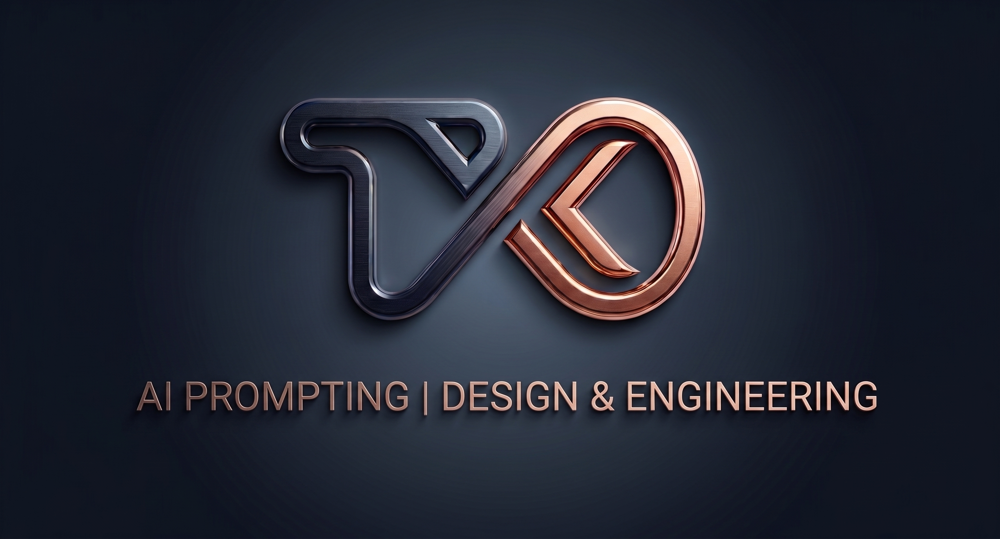

A better way to ask
Turn a rough thought into a clear, reusable prompt.

NEXUS-TK54
Sign in to continue.
Connecting…
No password needed. Your email stays off your dashboard.
NEXUS-TK54 · PERSONAL STUDIO
Explore an idea, shape a design, or put a prompt to work.
Saved on this device. Cloud sync is not connected.
DESIGN DNA
Every control changes the live preview. Turn your favorite style into a reusable brief.
YOUR NEXT EXPERIMENT
Bring your prompts and inspiration into focus.
Turn a rough thought into a clear, reusable prompt.
Room to breathe, readable type and a purposeful accent.
Link an idea to the reference that gives it direction.
Interactive sample interface. These cards are preview content.
VISUAL LOGIC STUDIO
Build a prompt locally, or run it through OpenAI when connected.
Run a workflow to see the assembled prompt or AI response here.
Quality checks verify length and required text. They do not verify factual accuracy.
CONNECTIONS
The local studio works now. Connect services when you’re ready.
The API key stays in the local connection service, not in your saved cards or backups. Live runs send workflow text to OpenAI.
Checking connection…
Connect this project, then sign in by email. Your database password stays in Supabase.
Project needs its publishable key
Open Supabase dashboard ↗The first Sync now merges this device with your account and enables automatic sync. Cards, files, styles, workflows and run history are included. Export a backup before merging devices. Local work remains available offline.
YOUR IDEAS, PUT TO WORK
Keep ideas and visual references together. Select a card to work with it.
Everything saved on this device.
Add a prompt, idea or image. Connect it to a reference to build context.